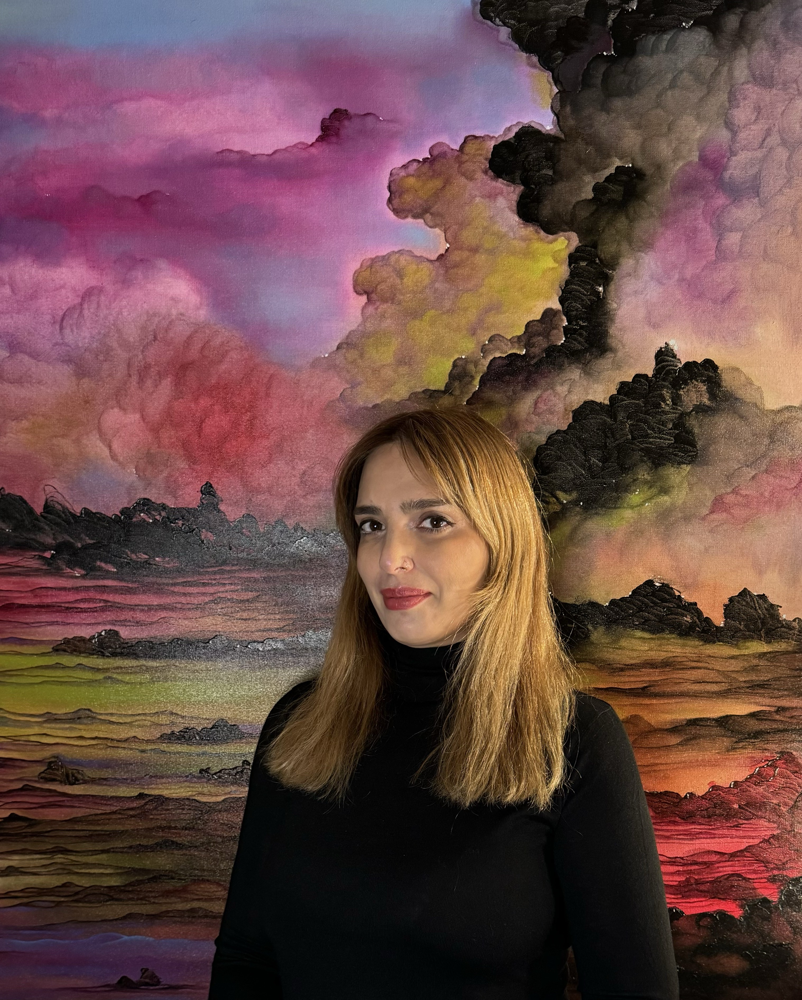

Tea Gzirishvili is a Brooklyn-based artist, born in Tblisi, Georgia in 1983. She attended the Nikoladze School of Arts, and earned a Bachelor of Fine Arts and Theater Arts degree from the Tbilisi State Academy of Arts in 2007. Her main creative mediums are oil on canvas and graphite.
Tea’s work has been exhibited internationally at The Academy of Arts, Tbilisi, Georgia; Munich-Golden, Museum of Contemporary Art MoRA, Jersey City, NJ, and in New York City at George Billis Gallery, World Trade Gallery, Artifact Gallery, New York Live arts lobby and Beka Museum.
She was selected to participate in the Immigrant Artist Mentoring Program for 2024.
She relocated to the United States in 2020 with her family. Tea’s move to New York from Tiblisi initiated a significant period of artistic and personal growth in terms of self-awareness, fortitude, and artistic desire. Today, her artwork acts as a connection between the past and present.
Her main mediums that she uses are oil on canvas and graphite. She's finished her "Energies" painting series and is presently working.
Statement
My paintings and drawings focus on the power of creation and the potential of imagination. Using explosions as a visual metaphor, I explore the creation of new worlds, and possibilities from the chaos of destruction. A moody and mysterious atmosphere reflects the character and intensity of the energies that fascinate me. Beginning with the visual reference to explosions, I use color to invent new worlds. My work records my ongoing exploration of the metaphysical and spiritual aspects of energy—the invisible forces that shape the world around us. Through my work, I invite others to explore their own potential and embrace the power of imagination.